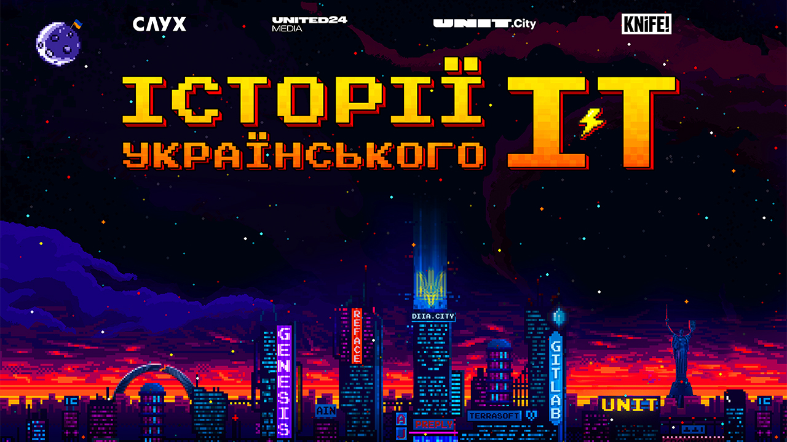
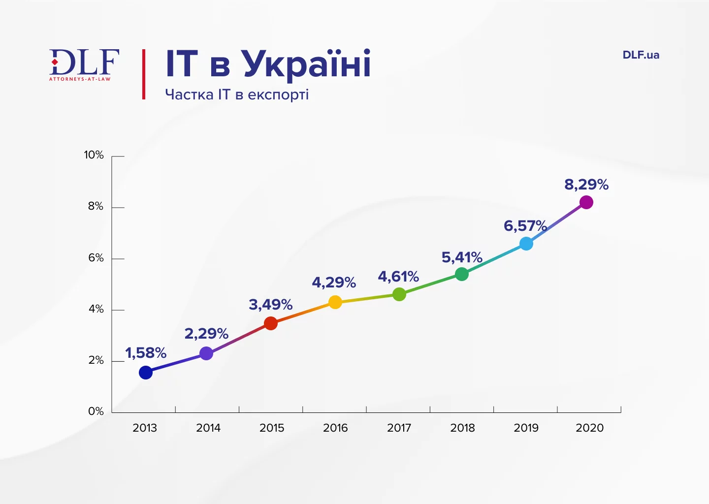
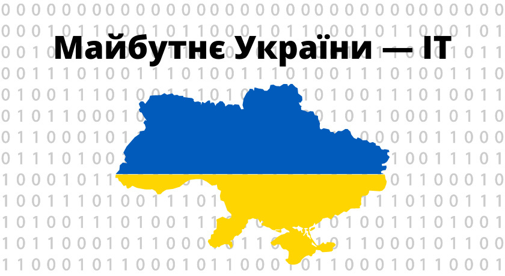

Історія ІТ в Україні
Зародження інформаційних технологій в Україні розпочалося ще в радянський період, а саме у 1914 році, коли було висловлено iдею механiзацiї логiчних дiй, що формалiзуються, та була побудована «Машина логічного мислення». Ця історична подія сталася у Харківському технологічному інституті. Сьогодні цей багаторічний досвід дозволяє відслідкувати корені сучасної ІТ-сфери.
Сучасність ІТ в Україні
На сьогодні Україна є одним з провідних постачальників ІТ-аутсорсингових послуг у світі. На території країни успішно працюють як великі міжнародні корпорації, так і перспективні стартапи, які створюють інноваційні продукти та сервіси.
Майбутнє ІТ в Україні
Прогнози щодо розвитку ІТ-сфери в Україні є надзвичайно позитивними: з'являються все нові стартапи, технологічні кластери та освітні програми. Це створює підґрунтя для подальшого успіху галузі на міжнародній арені.
